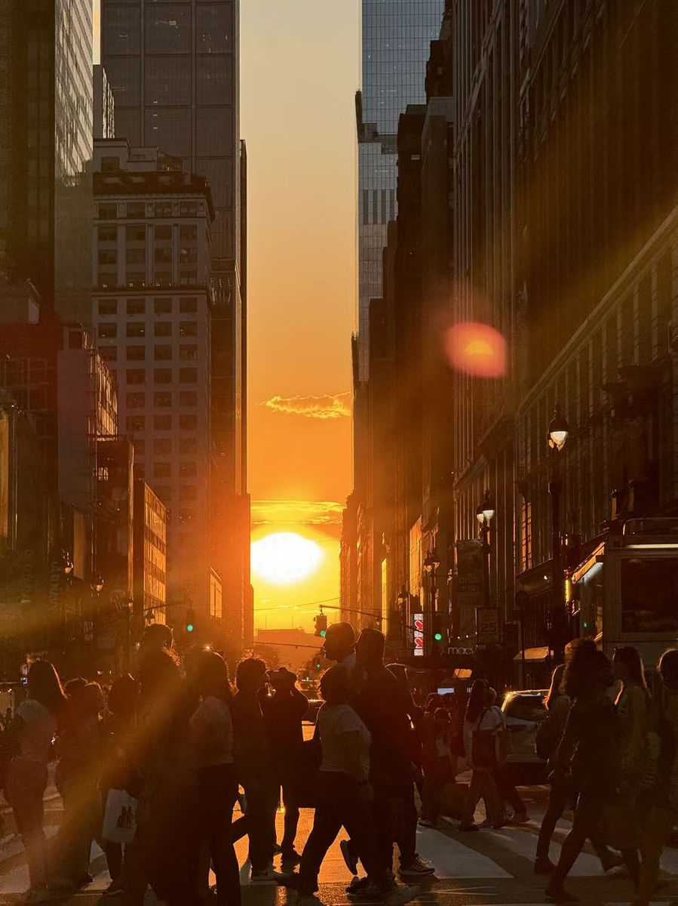
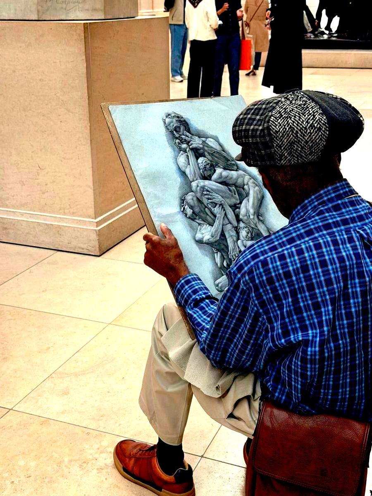
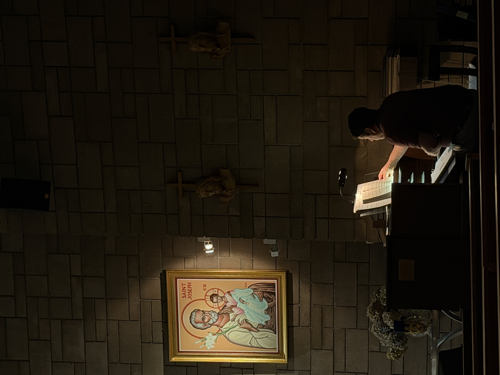
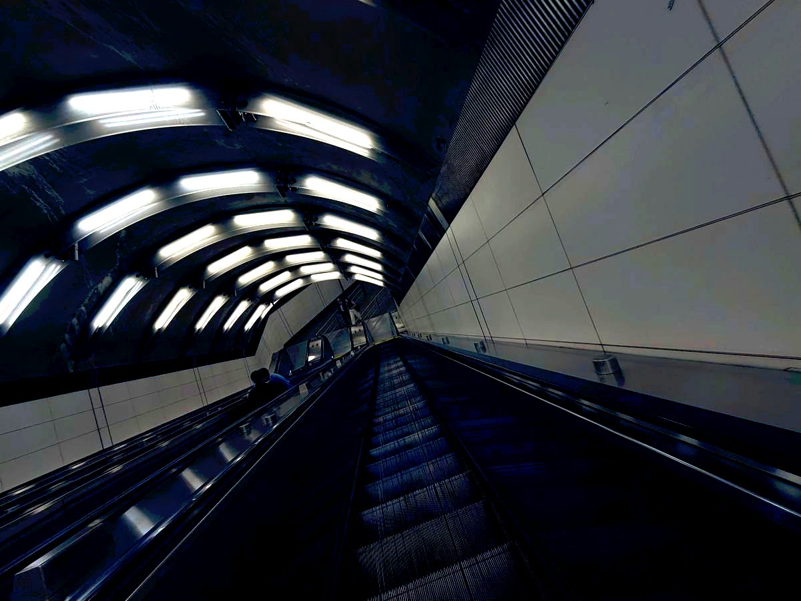
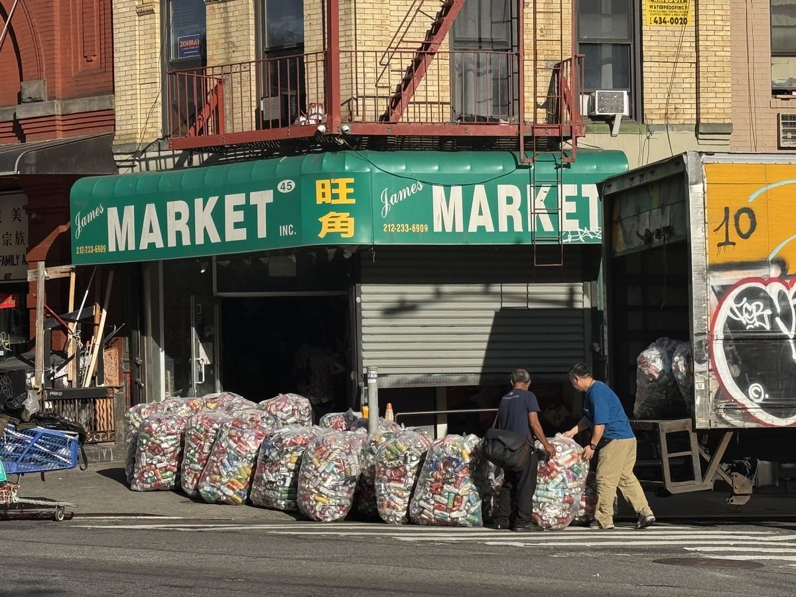
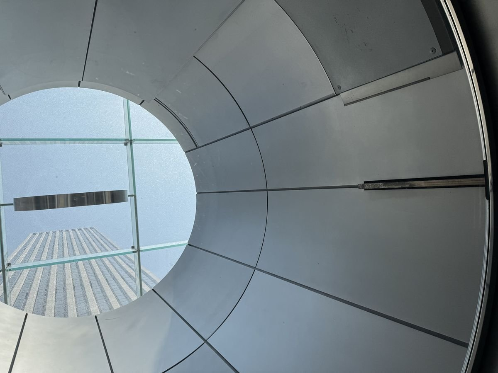
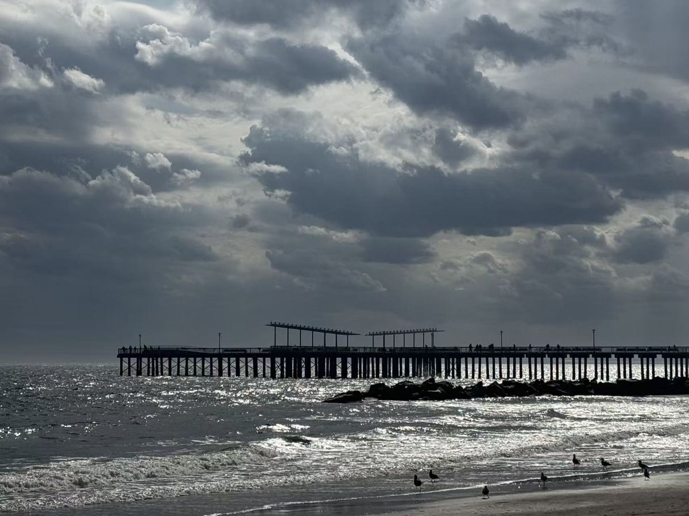
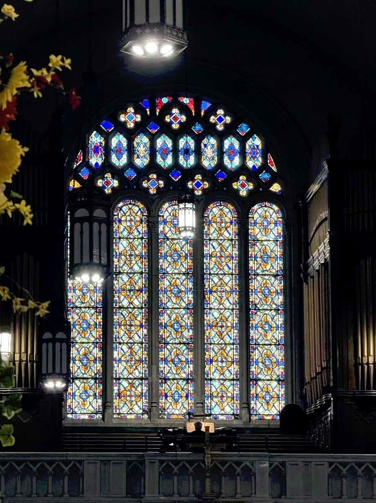
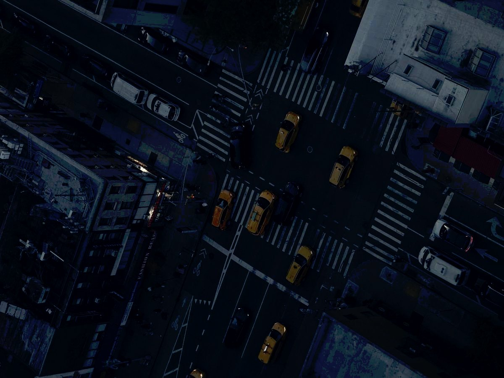

Photography · New York
Selected Work









About
Ye Chen is a photographer based in New York City. His work focuses on urban spaces, faith, and everyday life. Through architecture, street scenes, and community events, he explores the relationship between light, people, and place. His photographs aim to preserve quiet moments that might otherwise go unnoticed.